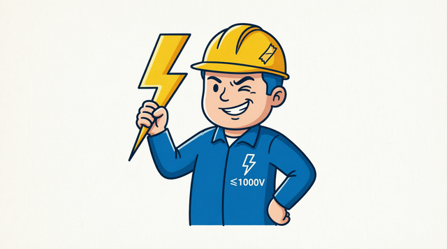
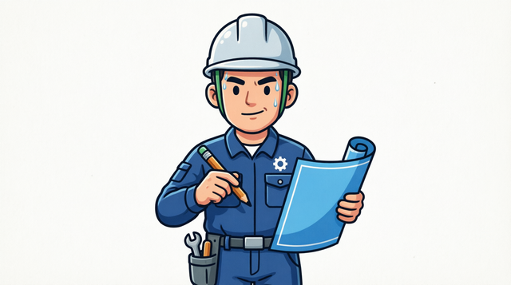
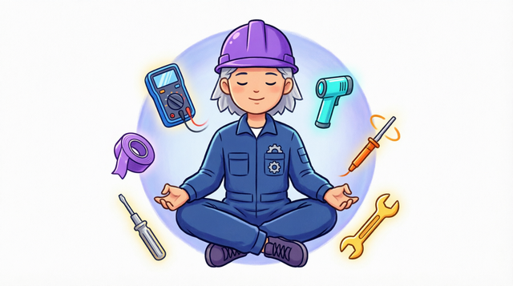
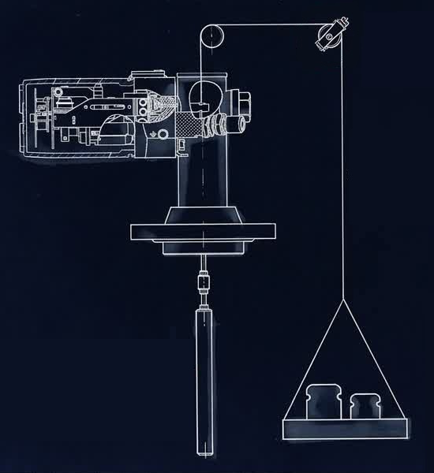

• 4–20 мА — наиболее распространённый унифицированный токовый сигнал (см. IEC 60381-1).
• 0–10 В — напряженческий сигнал; ограничение по длине кабеля и помехозащите по сравнению с токовым.
• 0–5 мА — применяют реже, в особых схемах.
• Пневматический сигнал 0,2–1,0 кгс/см² (20–100 кПа) — промышленный стандарт для пневмоприводов и приборов.
• ГОСТ 26.011-80 «Сигналы ГСП» — общие положения по сигналам.
• ГОСТ 13384-93 «Преобразователи измерительные тока и напряжения» — требования к преобразователям.
• IEC 60381-1/2 — международные рекомендации по аналоговым сигналам.
• HCF SPEC-127 — спецификация HART Foundation (описание протокола HART).
Выбор расчёта
РД 50-411-83 / ГОСТ 26969-86
Прикидочный расчёт
Упрощённая формула для оценки перепада на диафрагме без полного расчёта по ГОСТ



Приведённая погрешность (γ) — отношение абсолютной погрешности к нормирующему значению Xн, выраженное в процентах. Класс точности датчика давления, обозначенный числом (без дополнительных символов), указывает именно приведённую погрешность.
Нормирующее значение Xн: при НПИ = 0 Xн = ВПИ; при НПИ ≠ 0 Xн = ВПИ − НПИ (диапазон измерения).
Расчёт: Δ = ±(γ/100) · Xн, где γ — класс точности (%), Xн — нормирующее значение. Рассчитанная абсолютная погрешность выражается в тех же единицах измерения, что и измеряемая величина (МПа, кПа, бар, кгс/см² и т.д.).
Нормативный документ: ГОСТ 8.401-80 «ГСИ. Классы точности средств измерений. Общие требования».
Предел допускаемой погрешности термопары определяется классом точности и температурным диапазоном. В зависимости от диапазона применяется одна из двух формул: постоянная (Δ = ±C °C) или линейная (Δ = ±a·|t| °C), где t — температура рабочего спая.
Классы точности: класс 1 — наивысшая точность, класс 2 — стандартная, класс 3 — пониженная. Не все классы доступны для каждого типа термопары и температурного диапазона.
Типы термопар: ТХА (K) — хромель-алюмель, ТЖК (J) — железо-константан, ТМК (T) — медь-константан, ТНН (N) — никросил-нисил, ТХКн (E) — хромель-константан, ТПП (R, S) — платинородий-платина, ТПР (B) — платинородий-платинородий.
Нормативный документ: ГОСТ Р 8.585-2001 «ГСИ. Термопары. Номинальные статические характеристики преобразования».
Относительная погрешность (δ) — отношение абсолютной погрешности к текущему измеренному значению X, выраженное в процентах. Класс точности расходомера, обозначенный числом в кружке, указывает именно относительную погрешность.
Расчёт: Δ = ±(δ/100) · |X|, где δ — класс точности (%), X — текущее измеренное значение. Рассчитанная абсолютная погрешность выражается в тех же единицах измерения, что и измеряемая величина (м³/ч, л/ч, кг/ч и т.д.).
Нормативный документ: ГОСТ 8.401-80 «ГСИ. Классы точности средств измерений. Общие требования».
Приведённая погрешность (γ) — отношение абсолютной погрешности к нормирующему значению Xн, выраженное в процентах. Класс точности уровнемера, обозначенный числом (без дополнительных символов), указывает именно приведённую погрешность.
Нормирующее значение Xн: при НПИ = 0 Xн = ВПИ; при НПИ ≠ 0 Xн = ВПИ − НПИ (диапазон измерения).
Расчёт: Δ = ±(γ/100) · Xн, где γ — класс точности (%), Xн — нормирующее значение. Рассчитанная абсолютная погрешность выражается в тех же единицах измерения, что и измеряемая величина (мм, см, м, % и т.д.).
Нормативный документ: ГОСТ 8.401-80 «ГСИ. Классы точности средств измерений. Общие требования».
Приведённая погрешность (γ) — отношение абсолютной погрешности к нормирующему значению Xн, выраженное в процентах. Класс точности, обозначенный числом (без дополнительных символов), указывает именно приведённую погрешность.
Нормирующее значение Xн: при НПИ = 0 Xн = ВПИ; при НПИ ≠ 0 Xн = ВПИ − НПИ (диапазон измерения).
Расчёт: Δ = ±(γ/100) · Xн, где γ — класс точности (%), Xн — нормирующее значение. Рассчитанная абсолютная погрешность выражается в тех же единицах измерения, что и измеряемая величина.
Примеры применения: датчики давления (преобразователи избыточного, абсолютного давления, давления-разрежения), уровнемеры, преобразователи тока и напряжения с линейной шкалой, электромеханические приборы (вольтметры, амперметры с равномерной шкалой), манометры, напоромеры, тягомеры. Обозначение класса точности — просто число на шкале прибора (например, «0,5»), что означает γ = ±0,5%.
Нормативный документ: ГОСТ 8.401-80 «ГСИ. Классы точности средств измерений. Общие требования».
Приведённая погрешность (γ) с подчёркиванием — означает, что нормирующее значение Xн принимается равным длине шкалы (а не ВПИ). Применяется для приборов с существенно нелинейной шкалой (омметры, измерители сопротивления изоляции и т.п.).
Расчёт: Δ = ±(γ/100) · Xн, где Xн — длина шкалы в единицах измерения.
Примеры применения: омметры, мегаомметры, измерители сопротивления изоляции — приборы с существенно нелинейной (гиперболической) шкалой, где деления сжаты в начале и растянуты в конце. Подчёркивание класса точности означает, что за нормирующее значение принята длина всей шкалы, а не верхний предел. Также встречается у некоторых типов измерителей влажности и pH-метров с нелинейной градуировкой.
Нормативный документ: ГОСТ 8.401-80 «ГСИ. Классы точности средств измерений. Общие требования».
Относительная погрешность (δ) — отношение абсолютной погрешности к текущему измеренному значению X, выраженное в процентах. Класс точности, обозначенный числом в кружке, указывает именно относительную погрешность. Она постоянна во всём диапазоне измерения.
Расчёт: Δ = ±(δ/100) · |X|, где δ — класс точности (%), X — текущее измеренное значение. Абсолютная погрешность пропорциональна измеренному значению.
Примеры применения: расходомеры и счётчики (электромагнитные, ультразвуковые, вихревые, кориолисовые), цифровые мультиметры при измерении сопротивления и ёмкости, мосты измерительные, частотомеры, измерители мощности, весы электронные с цифровой индикацией, измерительные преобразователи с нормированной относительной погрешностью. Обозначение класса точности — число в кружке на шкале или в документации (например, ⓪⑤), что означает δ = ±0,5% во всём диапазоне.
Нормативный документ: ГОСТ 8.401-80 «ГСИ. Классы точности средств измерений. Общие требования».
Относительная погрешность (δ) по дроби c/d — относительная погрешность с аддитивной (c) и мультипликативной (d) составляющими. Зависит от текущего значения X: чем ближе X к Xmax, тем меньше погрешность.
Расчёт: δ = ±[c + d · (|Xmax/X| − 1)]%, затем Δ = ±(δ/100) · |X|, где Xmax — верхний предел измерения (ВПИ), X — текущее измеренное значение.
Примеры применения: цифровые мультиметры (класс точности 0,02/0,01 и аналогичные), цифровые вольтметры и амперметры, измерительные преобразователи с аддитивной и мультипликативной составляющими погрешности, калибраторы, прецизионные измерительные приборы с широким диапазоном. Дробная форма класса точности позволяет учесть рост погрешности при приближении к началу диапазона, где аддитивная составляющая (c) доминирует над мультипликативной (d).
Нормативный документ: ГОСТ 8.401-80 «ГСИ. Классы точности средств измерений. Общие требования».


- Настраиваемый дашборд — закрепляйте разделы на главной, перетаскивайте карточки для изменения порядка, удаляйте свайпом.
- Избранное для всех каталогов — закладка доступна не только в приборах, но и в блокировках, клапанах и регуляторах. Список избранного можно перетаскивать и очищать свайпом.
- Десктоп: разделённый экран — на широких экранах список и карточка деталей показываются рядом; кнопка ⇄ меняет панели местами.
- Перетаскивание и свайпы — долгое зажатие + перетаскивание для смены порядка; свайп по карточке — удаление из закреплённых / избранного или добавление в каталогах.
- Страница обновлений и справки — раздел «Что нового» с возможностями и инструкциями; значок ? в верхнем баре подсвечивается красным при непрочитанных обновлениях.